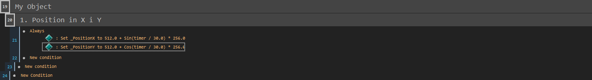

Tutorial 1: Object Mapping Basics
Here you will learn how to set sprites on the screen
First open Tails7.mfa and go to frame Room#0000

Then we run the project and check if it works.

You should have a view like this:
Use the W A S D keys to move in the X and Y axis.
Use the Space and Ctrl keys to move in the Z axis.
Use the Left and Right arrow keys to rotate the camera in the X axis.
Use the Up and Down arrow keys to rotate the camera in the Z axis.
Use the Q E to change the perspective.
Okay, now let's focus on creating a new object that we will modify.
So I make sure the correct layer is selected. (Layer 3 is generally for sprite, fade and line objects, however you can change it to suit your needs)

I select the object (Sprite) Orange Fox and clone it, it should create (Sprite) Orange Fox 2

The object was created, but it is UNDER the (Sprite) Green Wolf object, so I move this object to the very bottom of the layers.
I move the object and ✨TA DA!✨ we have our own object. However, before you run the project, you need to highlight it to know that it is actually after the run.
I changed the name of the object (Sprite) Orange Fox 2 to (Sprite) My Object.
I turn on the Auto-update flag so that the icon updates itself after changing the texture.

I change the texture to the default diamond and make sure the Hot Spot at the bottom of the texture is centered..

In the last step I change the _PositionX and _PositionY values to 512.0.
I run the project and our object is displayed!

In the Event Editor I create simple events to always change the position of these values to give a circle effect.


Deactivates these events as we move on to the next topic.

We now focus on the _OffsetX and _OffsetY variables. _OffsetX
has less use since it moves the object on the screen in the X axis, however _OffsetY
is more effective since since it moves the object on the screen Y it creates the illusion of depth.
I set the _OffsetY value to -256.0 which will shift it up.
As we can see, the object is in the air.

In the event editor I create a simple event that causes an object to bounce endlessly off the floor.

I will deactivate this event as we now focus on the next topic.
Now let's look at the variables _Scale, _ScaleX and _ScaleY.
hese variables change the scales of the object.

I change the _Scale value from 5.0 to 25.0
which makes the object larger.
As we can see, the object is larger.
Additionally, I change the _ScaleX value from 1.0 to 3.0, which will make the object wider.

However, when I change the _ScaleY value from 1.0 to 3.0it will make the object taller.

I change the values to what they were before.
In the Event Editor I create an event that dynamically changes the overall scale of the object, which gives a pulsating effect.
And as we can see, this is what the result looks like:
You can change the Hot Spot to be centered to change the scale so it pulsates inward.

I create an event that changes the values separately for _ScaleX and _ScaleY as given below:

I will deactivate these events as we move on to the next topic.
Now let's take a look at the _LayerOffset. variable. It can change the layer position for the object. To demonstrate what I mean, I create 2 more copies of the object. I'll call them
(Sprite) My Object Red and (Sprite) My Object Yellow.

For the following objects I change the values as given below:

I create the following events in the Event Editor which sets the player's position to the given coordinates and when a given button is pressed, it changes the _OffsetLayer ovalue separately for a given object.

This will happen when I press the Z button. The (Sprite) My Object Yellow is displayed OVER all of these objects.

This will happen when I press the X button. All objects are layered by default.

This will happen when I press the C button. The (Sprite) My Object Red prite displays UNDER all these objects.
Deactivates this event as we now move on to the topic that will allow us to create objects automatically.
I plan that for a given new object that I created, i.e. Creator it would automatically create an object (Sprite) My Object and set its position in space.

I create several of these objects on Warstwie 4, and for this object I also turn off visibility at the start.
For objects (Sprite) My Object Red, (Sprite) My Object and (Sprite) My Object Yellow I disable creation at the start.
Prepares a simple event in the Event Editorto create (Sprite) My Object for each Creator.

This is what creating objects looks like:
For unnecessary objects in the frame, I disable their creation at the start so that they are only created (Sprite) My Object.
I made a little example using a few of these variables and this is what it looks like: